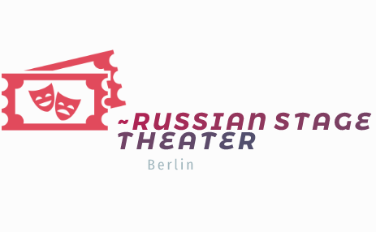

The Russian Stage Theater
“The Russian Stage Theatre” is the only Russian professional theatre outside the borders of the former USSR, which has its own theatre space, troupe, a constantly updated repertoire and performances in Russian language.
Since the release of the first professional performance in 2006, over 24 performances on Russian and World classics, 5 - for children.Participant and winner of numerous international theatre festivals in Moscow, St. Petersburg, Saransk, Brest, Makhachkala, Tashkent and more. Winner of the Grand Prix of the XIII International Festival of Solo Performances in Bitola, Macedonia (2011)
Activities such as participation in cultural events, running master-class studios for children and adults plays a huge cultural and educational importance among compatriots in Germany and represents the Russian Theatre School in Western Europe.The high artistic level has been repeatedly noted by Russian theatrical critics.